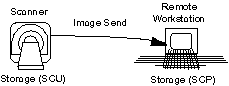
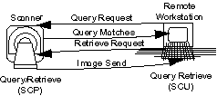
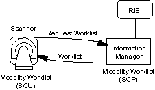
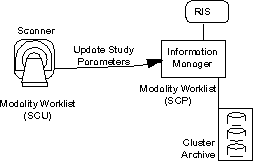
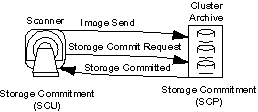
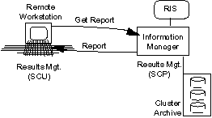
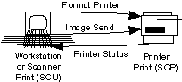

Proprietary to General Electric
Direction 2378260-800, Rev# 10
GOC3 Service Methods (Adv)
Proprietary to General Electric |
| Last Revised: | Sept 2, 2004 |
| NOTE: | The following section contains a general description
of the functions supported by DICOM on the GEMS scanner. More information can be located by contacting the Global Connectivity Center or visiting their web site (http://supportcentral.ge.com/superfacilitator/sup_super_community.asp?sc_id=25171). |
The Service Class User (SCU) sends image data and the Service Class Provider (SCP) receives image data. The image data is formatted into Objects such as CT, MR, Secondary Capture (SC), CR, X-ray RF, X-ray US, NM, etc. See Illustration 1.
GE Application: MR Signa Manual Send - User initiates the transfer of image (or series/ study of images) from the Signa to an Advantage. The Signa may also send to a non-GE device.
GE Application: CT System Auto Transfer - Automatically transfers images to the Advantage Windows at scan. Again, it may also send images to a non-GE device.
Illustration 1: DICOM Storage

Allows a system to query another system for a list of available images (query). Also allows a system to request another system to send images (retrieve). The SCU initiates the queries and retrieval, and the SCP responds to queries with a list of available data, as well as responding to the retrieval request by sending images. See Illustration 2.
GE Application: Pull Query - The Advantage Review-Diagnostic (ARD) user requests a list of images from the CT System. The ARD requests the scanner to send some of these images to the ARD and the scanner sends the images using the Service Class.
Illustration 2: DICOM Query/Retrieve

Allows a scanner (SCU) to obtain patient requested procedure information for scheduled examinations from Information Management System (IMS). Often called the DICOM interface, however the scanner will generally not be connected directly to HIS/ RIS but to an IMS, which in turn connect to the HIS/ RIS. See Illustration 3.
GE Application - A worklist is presented to the technician who simply selects the scheduled patient from the list rather than manually entering the patient demographics information. Saves typing time and avoids typing errors. Automates scheduling and information flow.
Illustration 3: DICOM Modality Worklist Management

Allows a modality (SCU) to keep an Imaging Information Management System (IMS) updated on the progress and completion of an examination. The associated series of form a Study Component whose actual content and status is transmitted to the Information Management system (SCP). See Illustration 4.
GE Application - Quality management in the imaging process, automatic inputs to billing, and timely triggering of post acquisition (post processing, interpretation, ICU, etc.) events.
Illustration 4: DICOM Study Component Management

Allows modalities (SCU) to relinquish archiving responsibility to an external device (e.g., network archive) acting as a Service Class Provider (SCP). The Storage Service Class is used in conjunction with the Commitment Service Class to transfer the images to the storage device(s). See Illustration 5.
GE Application - (Primary Archive Node) Frees up disk space on the scanner without extensive manual archiving. Function needed on a scanner to safely work with a network manager.
Illustration 5: DICOM Storage Commitment

Allows the radiologist reports to be retrieved by the Service Class User (SCU). See Illustration 6.
GE Application: Reports may be viewed with the patient’s images when retrieved from an Information System.
Illustration 6: DICOM Results Management

Allows a workstation or scanner to send images to a printer for hard copy output. For example, a workstation (SCU) sends images to a laser camera (SCP) to be copied on film. This network interface permits workstations to share one camera interface, which can reside anywhere on the network. See Illustration 7.
| NOTE: | Camera manufacturers are just beginning to offer DICOM products. Currently, no GE products support this feature. |
Illustration 7: DICOM Basic Print Management

Standardizes the physical media (Magneto Optical Disk holding 1. 3 Billion bytes of data) and the logical format in which images are stored on the archive media. A device supporting the Media Interchange Service Class may support the following roles:
File-Set Creator (FSC) to initialize a new piece of media and write a number of images
File-Set Reader (FSR) to read the imaging directory and selected images stored on a media
File-Set Updater (FSU) to read and update the imaging directory as well as images on the media
Standardizes the physical media (Recordable Compact Disk holding 640 Million bytes of data) and the logical format in which images are stored on the archive media. A device supporting the Media Interchange Service Class may support one or more of the roles defined above.
Allows any system to send a test message to another system to verify the network connection.
CONFIGURATION
The DICOM Print Configuration Information field is controlled by the Camera Manufacturer. It is typically used to set information on the Look-up Table to be used to convert the inputted digital image data to the hardcopy film output (since the range of valid data for the input may not match the range for the output data); however, it is not limited to this purpose. The string field is defined by the Camera Manufacturer and is currently up to 1024 bytes. The value is equivalent to working the contrast on a image monitor.
DENSITY
Density is a film term that represents the pixel value at a particular point on the film. Empty Density is the pixel representation of a blank image frame on a film. Border Density is the pixel representation of the area outside of the image frames on the film. Minimum Density is the minimum pixel representation to be used within an image, while Maximum Density is the maximum pixel representation to be used within an image. The last two values are equivalent to working the brightness on a image monitor. The range and effect of the last two density parameters are Camera Manufacturer dependent.
DICOM
Acronym for Digital Imaging and Communication in Medicine. This standard is a detailed specification for transferring medical images and related information between computers.
MAGNIFICATION TYPE
Images from the CT scanner are digitized at a low resolution and are then printed at a higher resolution. To accomplish this, images are interpolated prior to being printed. A number of techniques may be used to perform the image interpolation. The most common techniques are:
Replication: This is the simplest method of interpolation (zero order interpolation). In this case adjacent data is used to calculate the fill data. The resultant images are typically extremely blocky and contain jagged edges.
Bilinear: Also known as first order (linear) interpolation, this technique consists of fitting straight lines through adjacent data points to determine intermediate points. The resultant images are somewhat blurred.
Cubic: Third order (cubic) interpolation is usually the favored technique. There are a large number of possible formulations for cubic interpolation. Each differs by the coefficients used in the process. The Camera Manufacturers use a second parameter called a Smoothing Type to set the coefficients. The implementation of the coefficient is Camera Manufacturer dependent. The cubic interpolation presents the smoothest version of interpolation when compared to replication or bilinear interpolation.
SERVICE CLASS
Represents a specific application feature by defining a set of related SOP classes (DICOM Print).
SMOOTHING TYPE
A value used in conjunction with the Magnification Type. It is only relevant when the magnification type is set to Cubic. Smoothing is used to set the coefficients for the formulation of the interpolation. The valid values and meaning of the Smoothing Type parameter are controlled by the DICOM Print Manufacturer. For example, Imation expects a smoothing factor of 0 to 15, while Agfa expects a smoothing factor of VR type 0, or falling within the range of 100 to 299.
SCP
Acronym for Service Class Provider. This is the Service Class server. (In the case of DICOM Print, this is the DICOM Print Camera.)
SCU
Acronym for Service Class User. This is the Service Class client. (In the case of DICOM Print, this is the CT Scanner.)
SOP
Acronym for Service Object Pair. This term is used in DICOM to specify the capabilities of a DICOM entity. The entity is defined by the union of the Information Object Definition (IOD) (e.g., CT image) and the DICOM Message Service Element (DIMSE) Services (e.g., store).